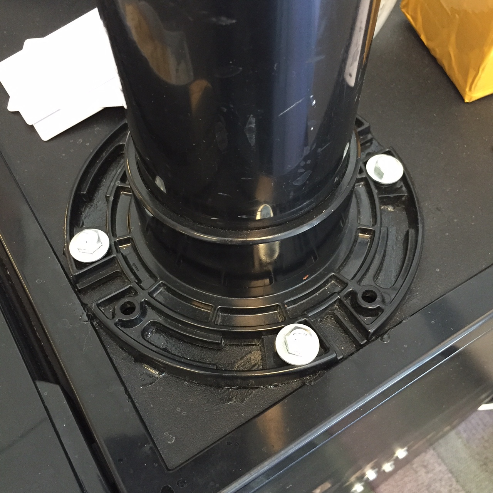

cinemagraph by BigMurph26
What
- Smart IoT Beverage Dispenser
- Custom Software
- Mix of BBB and Custom HW
- Modified Fridge
- All DIY
Timeline
- Oct 2014: Idea
- June 2015: Let's do this!
- ~ 1 week of work
Investment
- ~30 hours together
- ~90 individual person hours
- Worked lunch, nights and 1 whole day (my garage)
- ~$450 for all hardware including fridge
The Team


The Basics
- Danby Mini Fridge (Costco)
- CO2 Tank, 5 Lbs
- Corny Key, 5 Gal
Rate Limiting
- BeagleBone Black, RevC
- RFID Reader/Module, 125 KHz
- Flow Meter
- Solenoid + Ball Valve
Beagle Bone Black
- Debian Linux
- Node.JS
RFID Read
var DEVICE_ID = '/dev/serial/by-id/usb-FTDI_FT232R_USB_UART_AI02KO15-if00-port0';
var readableStream = fs.createReadStream(DEVICE_ID);
readableStream.on('data', function(data) {
callback(data.toString('hex'));
});
readableStream.on('close', function() {
common.command('forever restartall');
});
User Flow
Enhancements
- LCD 16x2 Black & White
- Custom Cape, IC2 support
- Temperature Sensor
LCD
...
clear: function(cb) {
// console.log('lcd:clear');
runCommand('i2cset -y 1 0x04 0x63 0x40 0x00 0x00 i', cb);
},
home: function(cb) {
// console.log('lcd:home');
runCommand('i2cset -y 1 0x04 0x68 0x40 0x00 0x00 i', cb);
},
print: function(str, cb) {
...
Slack Integration
- Cheap Admin Discovery
- Temperature Threshold Alerts
- Keg Volume Alerts
Admin Panel
- Simple UI: Backbone | Bootstrap
- LowDB JSON files
- Socket.io websockets
Local Testing
if (process.env.MODE === 'desktop') {
var _ = require('./_');
module.exports.readTemperature = function(callback) {
callback(_.random(37, 38)); // dummy data
}
} else {
var bs = require('bonescript');
var SENSOR_PIN = 'P9_40';
...
}
Challenges
- We suck at industrial design
- Stepping voltage (fried temp sensor)
- IC2 and Foreign HW
- RFID/USB Disconnecting
- Cleaning the Valve
- Filling Corny Kegs
Lessons
from
Use
(or lack thereof)
Lesson: Change from root user
cinemagraph thanks to : gideon de villiers
Lesson: Drink Frequently :)

Next Steps
- Log Rotation
- Wifi
- Improve USB/RFID Disconnect Handling
- Analytics
- Replace Fried Temp Sensor
Questions?